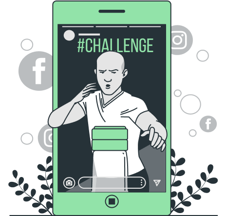

Bienvenido a EcoHabit
Monitorea tu huella ecológica y adopta hábitos sostenibles con EcoHabit

Servicios
Comunidad
En EcoHabit, la comunidad es el corazón de nuestra aplicación. Conéctate con otros usuarios, comparte tus logros y aprende nuevas formas de vivir de manera más sostenible. Juntos, podemos hacer una gran diferencia.
Desafíos
En EcoHabit, ofrecemos retos diarios para ayudarte a reducir tu huella ecológica de manera divertida. Compite y colabora con la comunidad mientras adoptas hábitos sostenibles.
Preguntas Frecuentes
¿Tienes dudas sobre EcoHabit? Nuestra sección de Preguntas Frecuentes está diseñada para proporcionarte respuestas rápidas y claras a las consultas más comunes.
Sobre Nosotros

EcoFive es un equipo multidisciplinario de estudiantes de la Universidad Peruana de Ciencias Aplicadas (UPC), comprometidos con el desarrollo de soluciones tecnológicas para promover la sostenibilidad ambiental. Su proyecto principal, EcoHabit, busca facilitar la adopción de hábitos sostenibles mediante una plataforma intuitiva que permite a los usuarios gestionar su huella ecológica diaria.
EcoHabit es una aplicación desarrollada por EcoFive que permite a las personas gestionar su huella ecológica diaria de manera personalizada y efectiva. Esta solución tiene como objetivo ayudar a los usuarios a monitorear su consumo de recursos, como agua, electricidad y alimentos, integrándose con dispositivos inteligentes del hogar para ofrecer datos en tiempo real. Además, EcoHabit fomenta la adopción de hábitos sostenibles a través de retos diarios y comparativas con la comunidad, promoviendo un estilo de vida más ecológico. Como valor agregado, EcoHabit está comprometida con la educación ambiental, guiando a las personas en su camino hacia una vida más sostenible y reduciendo su impacto ambiental.
Preguntas Frecuentes
¿Porque debería instalar su app? y ¿Que beneficios me ofrece?
Click para desplegar
Instalar EcoHabit te permitirá gestionar tu huella ecológica diaria de manera personalizada y efectiva. La aplicación ofrece numerosos beneficios, como el monitoreo en tiempo real de tu consumo de recursos, incluyendo agua, electricidad y alimentos. Además, fomenta la adopción de hábitos sostenibles a través de retos diarios y comparativas con la comunidad, lo que te ayudará a llevar un estilo de vida más ecológico. EcoHabit también tiene un fuerte componente educativo, guiándote en el camino hacia una vida más sostenible y ayudándote a reducir tu impacto ambiental. La integración con dispositivos inteligentes del hogar te proporcionará datos precisos y actualizados, facilitando una gestión más consciente y responsable de los recursos naturales.
¿Puedo conectar la app con todos mis dispositivos inteligentes o tiene algún limite?
Click para desplegar
EcoHabit está diseñada para integrarse con una amplia variedad de dispositivos inteligentes del hogar. Sin embargo, la compatibilidad puede depender del tipo y la marca de los dispositivos que tengas. Es recomendable verificar la lista de dispositivos compatibles en la documentación de la app o en su sitio web oficial.
Puedo revisar en cualquier momento el registro del consumo?
Click para desplegar
Sí, puedes revisar el registro de tu consumo en cualquier momento. La app almacena los datos de tu consumo de recursos y te permite acceder a ellos cuando lo necesites, ofreciéndote una visión clara y detallada de tu huella ecológica a lo largo del tiempo.
Nuestros medios de pago
Si la app es de tu agrado y quieres ayudarnos a mejorar podrías apoyarnos!